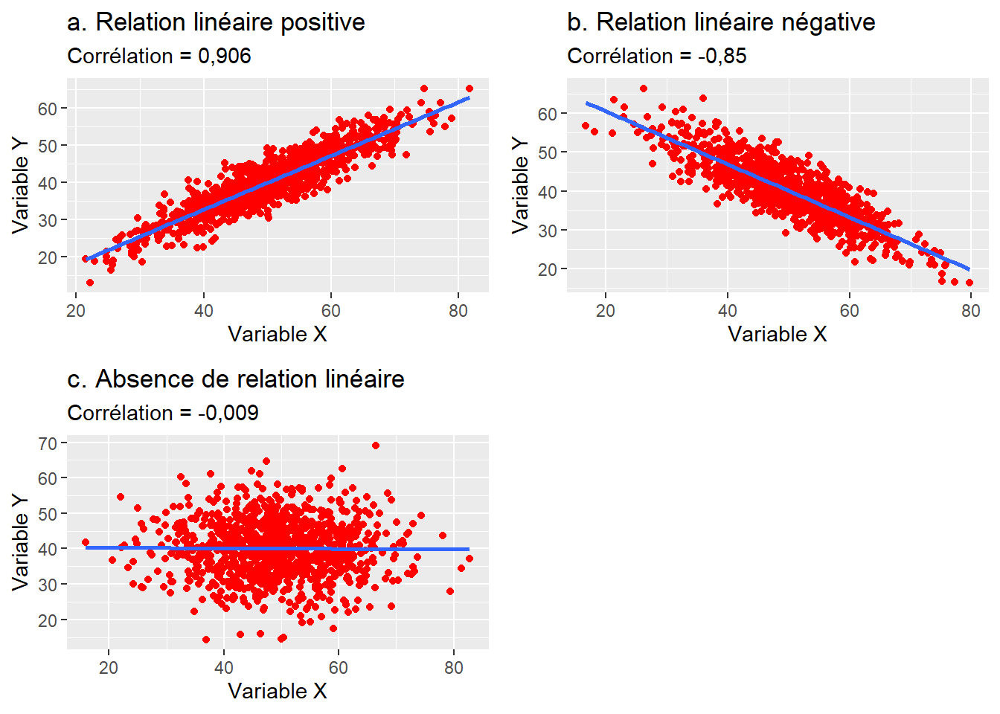
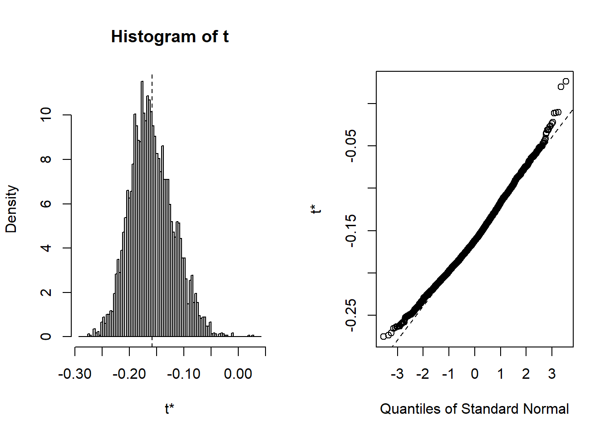

4 Relation linéaire entre deux variables quantitatives
Dans le cadre de ce chapitre, nous présentons les trois principales méthodes permettant d’explorer la relation linéaire entre deux variables quantitatives, soit la covariance, la corrélation et la régression linéaire simple.
Liste des packages utilisés dans ce chapitre
- Pour créer des graphiques :
-
ggplot2, le seul, l’unique! -
ggpubrpour combiner des graphiques et réaliser des diagrammes quantiles-quantiles.
-
- Pour manipuler des données :
-
dplyrnotamment pour les fonctionsgroup_by,summarizeet les pipes %>%.
-
- Pour les corrélations :
-
bootpour réaliser des corrélations avec bootstrap. -
correlation, de l’ensemble de packageseasy_stats, offrant une large panoplie de mesures de corrélation. -
corrplotpour créer des graphiques de matrices de corrélation. -
Hmiscpour calculer des corrélations de Pearson et Spearman. -
ppcorpour calculer des corrélations partielles. -
psychpour obtenir une matrice de corrélation (Pearson, Spearman et Kendall), les intervalles de confiance et les valeurs de p. -
stargazerpour créer de beaux tableaux d’une matrice de corrélation en HTML, en LaTeX ou en ASCII.
-
- Autres packages :
-
foreignpour importer des fichiers externes. -
MASSpour générer des échantillons normalement distribués. -
stargazerpour imprimer des tableaux.
-
Deux variables continues varient-elles dans le même sens ou bien en sens contraire?
Répondre à cette question est une démarche exploratoire classique en sciences sociales puisque les données socioéconomiques sont souvent associées linéairement. En d’autres termes, lorsque l’une des deux variables tant à augmenter, l’autre augmente également ou diminue systématiquement.
En études urbaines, nous pourrions vouloir vérifier si certaines variables socioéconomiques sont associées positivement ou négativement à des variables environnementales jugées positives (comme la couverture végétale ou des mesures d’accessibilité spatiale aux parcs) ou négatives (pollutions atmosphériques et sonores).
Par exemple, au niveau des secteurs de recensement d’une ville canadienne, nous pourrions vouloir vérifier si le revenu médian des ménages et le coût moyen du loyer varient dans le même sens que la couverture végétale; ou encore s’ils varient en sens inverse des niveaux moyens de dioxyde d’azote ou de bruit routier.
Pour évaluer la linéarité entre deux variables continues, deux statistiques descriptives sont utilisées : la covariance (section 4.2) et la corrélation (section 4.3).
4.1 Bref retour sur le postulat de la relation linéaire
Vérifier le postulat de la linéarité consiste à évaluer si deux variables quantitatives varient dans le même sens ou bien en sens contraire. Toutefois, la relation entre deux variables quantitatives n’est pas forcément linéaire. En guise d’illustration, la figure 4.1 permet de distinguer quatre types de relations :
Le cas a illustre une relation linéaire positive entre les deux variables puisqu’elles vont dans le même sens. Autrement dit, quand les valeurs de X augmentent, celles de Y augmentent aussi. En guise d’exemple, pour les secteurs de recensement d’une métropole donnée, il est fort probable que le coût moyen du loyer soit associé positivement avec le revenu médian des ménages. Graphiquement parlant, il est clair qu’une droite dans ce nuage de points résumerait efficacement la relation entre ces deux variables.
Le cas b illustre une relation linéaire négative entre les deux variables puisqu’elles vont en sens inverse. Autrement dit, quand les valeurs de X augmentent, celles de Y diminuent, et inversement. En guise d’exemple, pour les secteurs de recensement d’une métropole donnée, il est fort probable que le revenu médian des ménages soit associé négativement avec le taux de chômage. De nouveau, une droite résumerait efficacement cette relation.
Pour le cas c, il y a une relation entre les deux variables, mais qui n’est pas linéaire. Le nuage de points entre les deux variables prend d’ailleurs une forme parabolique qui traduit une relation curvilinéaire. Concrètement, nous observons une relation positive jusqu’à un certain seuil, puis une relation négative.
Pour le cas d, la relation entre les deux variables est aussi curvilinéaire; d’abord négative, puis positive.
Prenons un exemple concret pour illustrer le cas c. Dans une étude portant sur l’équité environnementale et la végétation à Montréal, Pham et al. (2012) ont montré qu’il existe une relation curvilinéaire entre l’âge médian des bâtiments résidentiels (axe des abscisses) et les couvertures végétales (axes des ordonnées) :
La couverture de la végétation totale et celle des arbres augmentent quand l’âge médian des bâtiments croît jusqu’à atteindre un pic autour de 60 ans (autour de 1950). Nous pouvons supposer que les secteurs récemment construits, surtout ceux dans les banlieues, présentent des niveaux de végétation plus faibles. Au fur et à mesure que le quartier vieillit, les arbres plantés lors du développement résidentiel deviennent matures — canopée plus importante –, d’où l’augmentation des valeurs de la couverture végétale totale et de celle des arbres.
Par contre, dans les secteurs développés avant les années 1950, la densité du bâti est plus forte, laissant ainsi moins de place pour la végétation, ce qui explique une diminution des variables relatives à la couverture végétale (figure 4.2).

Dans les sous-sections suivantes, nous décrivons deux statistiques descriptives et exploratoires – la covariance (section 4.2) et la corrélation (section 4.3) – utilisées pour évaluer la relation linéaire entre deux variables continues (cas a et b à la figure 4.1). Ces deux mesures permettent de mesurer le degré d’association entre deux variables, sans que l’une soit la variable dépendante (variable à expliquer) et l’autre, la variable indépendante (variable explicative). Puis, nous décrivons la régression linéaire simple (section 4.4) qui permet justement de prédire une variable dépendante (Y) à partir d’une variable indépendante (X).
4.2 Covariance
4.2.1 Formulation
La covariance (équation 4.1), écrite \(cov(x,y)\), est égale à la moyenne du produit des écarts des valeurs des deux variables par rapport à leurs moyennes respectives :
\[ cov(x,y) = \frac{\sum_{i=1}^n (x_{i}-\bar{x})(y_{i}-\bar{y})}{n-1} = \frac{covariation}{n-1} \tag{4.1}\]
avec \(n\) étant le nombre d’observations; \(\bar{x}\) et \(\bar{y}\) (prononcez x et y barre) étant les moyennes respectives des variables X et Y.
4.2.2 Interprétation
Le numérateur de l’équation 4.1 représente la covariation, soit la somme du produit des déviations des valeurs \(x_{i}\) et \(y_{i}\) par rapport à leurs moyennes respectives (\(\bar{x}\) et \(\bar{y}\)). La covariance est donc la covariation divisée par le nombre d’observations, soit la moyenne de la covariation. Sa valeur peut être positive ou négative :
Positive quand les deux variables varient dans le même sens, c’est-à-dire lorsque les valeurs de la variable X s’éloignent de la moyenne, les valeurs de Y s’éloignent aussi dans le même sens; et elle est négative pour une situation inverse.
Quand la covariance est égale à 0, il n’y a pas de relation entre les variables X et Y. Plus sa valeur absolue est élevée, plus la relation entre les deux variables X et Y est importante.
Ainsi, la covariance correspond à un centrage des variables, c’est-à-dire à soustraire à chaque valeur de la variable sa moyenne correspondante. L’inconvénient majeur de l’utilisation de la covariance est qu’elle est tributaire des unités de mesure des deux variables. Par exemple, si nous calculons la covariance entre le pourcentage de personnes à faible revenu et la densité de population (habitants au km2) au niveau des secteurs de recensement de la région métropolitaine de Montréal, nous obtenons une valeur de covariance de 33 625. En revanche, si la densité de population est exprimée en milliers d’habitants au km2, la valeur de la covariance sera de 33,625, alors que la relation linéaire entre les deux variables reste la même comme illustré à la figure 4.3. Pour remédier à ce problème, nous privilégions l’utilisation du coefficient de corrélation.
4.3 Corrélation
4.3.1 Formulation
Le coefficient de corrélation de Pearson (\(r\)) est égal à la covariance (numérateur) divisée par le produit des écarts-types des deux variables X et Y (dénominateur). Il représente une standardisation de la covariance. Autrement dit, le coefficient de corrélation repose sur un centrage (moyenne = 0) et une réduction (variance = 1) des deux variables, c’est-à-dire qu’il faut soustraire de chaque valeur sa moyenne correspondante et la diviser par son écart-type. Il correspond ainsi à la moyenne du produit des deux variables centrées réduites. Il s’écrit alors :
\[ r_{xy} = \frac{\sum_{i=1}^n (x_{i}-\bar{x})(y_{i}-\bar{y})}{(n-1)\sqrt{\sum_{i=1}^n(x_i - \bar{x})^2(y_i - \bar{y})^2}}=\sum_{i=1}^n\frac{Zx_iZy_i}{n-1} \tag{4.2}\]
avec \(n\) étant le nombre d’observations; \(\bar{x}\) et \(\bar{y}\) étant les moyennes respectives des variables X et Y.
La syntaxe ci-dessous démontre que le coefficient de corrélation de Pearson est bien égal à la moyenne du produit de deux variables centrées réduites.
library("MASS")
N <- 1000 # nombre d'observations
moy_x <- 50 # moyenne de x
moy_y <- 40 # moyenne de y
sd_x <- 10 # écart-type de x
sd_y <- 8 # écart-type de y
rxy <- .80 # corrélation entre X et Y
## création de deux variables fictives normalement distribuées et corrélées entre elles
# Création d'une matrice de covariance
cov <- matrix(c(sd_x^2, rxy*sd_x*sd_y, rxy*sd_x*sd_y, sd_y^2), nrow = 2)
# Création du tableau de données avec deux variables
df1 <- as.data.frame(mvrnorm(N, c(moy_x, moy_y), cov))
# Centrage et réduction des deux variables
df1$zV1 <- scale(df1$V1, center = TRUE, scale = TRUE)
df1$zV2 <- scale(df1$V2, center = TRUE, scale = TRUE)
# Corrélation de Pearson
cor1 <- cor(df1$V1, df1$V2)
cor2 <- sum(df1$zV1*df1$zV2) / (nrow(df1)-1)
cat("Corrélation de Pearson = ", round(cor1,5),
"\nMoyenne du produit des variables centrées réduites =", round(cor2,5))Corrélation de Pearson = 0.79321
Moyenne du produit des variables centrées réduites = 0.793214.3.2 Interprétation
Le coefficient de corrélation \(r\) varie de −1 à 1 avec :
- 0 quand il n’y a pas de relation linéaire entre les variables X et Y;
- −1 quand il y a une relation linéaire négative parfaite;
- 1 quand il y a une relation linéaire positive parfaite (figure 4.4).

Concrètement, le signe du coefficient de corrélation indique si la relation est positive ou négative et la valeur absolue du coefficient indique le degré d’association entre les deux variables. Reste à savoir comment déterminer qu’une valeur de corrélation est faible, moyenne ou forte. En sciences sociales, nous utilisons habituellement les intervalles de valeurs reportés au tableau 4.1. Toutefois, ces seuils sont tout à fait arbitraires. En effet, dépendamment de la discipline de recherche (sciences sociales, sciences de la santé, sciences physiques, etc.) et des variables à l’étude, l’interprétation d’une valeur de corrélation peut varier. Par exemple, en sciences sociales, une valeur de corrélation de 0,2 est considérée comme très faible alors qu’en sciences de la santé, elle pourrait être considérée comme intéressante. À l’opposé, une valeur de 0,9 en sciences physiques pourrait être considérée comme faible. Il convient alors d’utiliser ces intervalles avec précaution.
| Corrélation | Négative | Positive |
|---|---|---|
| Faible | de −0,3 à 0,0 | de 0,0 à 0,3 |
| Moyenne | de −0,5 à −0,3 | de 0,3 à 0,5 |
| Forte | de −1,0 à −0,5 | de 0,5 à 1,0 |
Le coefficient de corrélation mis au carré représente le coefficient de détermination et indique la proportion de la variance de la variable Y expliquée par la variable X et inversement. Par exemple, un coefficient de corrélation de −0,70 signale que 49 % de la variance de la variable de Y est expliquée par X (figure 4.5).
Condition d’application. L’utilisation du coefficient de corrélation de Pearson nécessite que les deux variables continues soient normalement distribuées et qu’elles ne comprennent pas de valeurs aberrantes ou extrêmes. D’ailleurs, plus le nombre d’observations est réduit, plus la présence de valeurs extrêmes a une répercussion importante sur le résultat du coefficient de corrélation de Pearson. En guise d’exemple, dans le nuage de points à gauche de la figure 4.6, il est possible d’identifier des valeurs extrêmes qui se démarquent nettement dans le jeu de données : six observations avec une densité de population supérieure à 20 000 habitants au km2 et deux observations avec un pourcentage de 65 ans et plus supérieur à 55 %. Si l’on supprime ces observations (ce qui est défendable dans ce contexte) – soit moins d’un pour cent des observations du jeu de données initial –, la valeur du coefficient de corrélation passe de −0,158 à −0,194, signalant une augmentation du degré d’association entre les deux variables.
4.3.3 Corrélations pour des variables anormalement distribuées (coefficient de Spearman, tau de Kendall)
Lorsque les variables sont fortement anormalement distribuées, le coefficient de corrélation de Pearson est peu adapté pour analyser leurs relations linéaires. Il est alors conseillé d’utiliser deux statistiques non paramétriques : principalement, le coefficient de corrélation de Spearman (rho) et secondairement, le tau (\(\tau\)) de Kendall, qui varient aussi tous deux de −1 à 1. Calculé sur les rangs des deux variables, le coefficient de Spearman est le rapport entre la covariance des deux variables de rangs sur les écarts-types des variables de rangs. En d’autres termes, il représente simplement le coefficient de Pearson calculé sur les rangs des deux variables :
\[ r_{xy} = \frac{cov(rg_{x}, rg_{y})}{\sigma_{rg_{x}}\sigma_{rg_{y}}} \tag{4.3}\]
La syntaxe ci-dessous démontre clairement que le coefficient de Spearman est bien le coefficient de Pearson calculé sur les rangs (section 4.3.1).
df <- read.csv("data/bivariee/sr_rmr_mtl_2016.csv")
# Transformation des deux variables en rangs
df$HabKm2_rang <- rank(df$HabKm2)
df$A65plus_rang <- rank(df$A65plus)
# Coefficient de Spearman avec la fonction cor et la méthode spearman
cat("Coefficient de Spearman = ",
round(cor(df$HabKm2, df$A65plus, method = "spearman"),5))Coefficient de Spearman = -0.11953# Coefficient de Pearson sur les variables transformées en rangs
cat("Coefficient de Pearson calculé sur les variables transformées en rangs = ",
round(cor(df$HabKm2_rang, df$A65plus_rang, method = "pearson"),5))Coefficient de Pearson calculé sur les variables transformées en rangs = -0.11953# Vérification avec l'équation
cat("Covariance divisée par le produit des écarts-types sur les rangs :",
round(cov(df$HabKm2_rang, df$A65plus_rang) / (sd(df$HabKm2_rang)*sd(df$A65plus_rang)),5))Covariance divisée par le produit des écarts-types sur les rangs : -0.11953Le tau de Kendall est une autre mesure non paramétrique calculée comme suit :
\[ \tau = \frac{n_{c}-n_{d}}{\frac{1}{2}n(n-1)} \tag{4.4}\]
avec \(n_{c}\) et \(n_{d}\) qui sont respectivement les nombres de paires d’observations concordantes et discordantes; et le dénominateur étant le nombre total de paires d’observations. Des paires sont dites concordantes quand les valeurs des deux observations vont dans le même sens pour les deux variables (\(x_{i}>x_{j}\) et \(y_{i}>y_{j}\) ou \(x_{i}<x_{j}\) et \(y_{i}<y_{j}\)), et discordantes quand elles vont en sens contraire (\(x_{i}>x_{j}\) et \(y_{i}<y_{j}\) ou \(x_{i}<x_{j}\) et \(y_{i}>y_{j}\)). Contrairement au calcul du coefficient de Spearman, celui du tau Kendall peut être chronophage : plus le nombre d’observations est élevé, plus les temps de calcul et la mémoire utilisée sont importants. En effet, avec n = 1000, le nombre de paires d’observations (\({\mbox{0,5}\times n(n-1)}\)) est de 499 500, contre près de 50 millions avec n = 10 000 (49 995 000).
À la lecture des deux histogrammes à la figure 4.7, il est clair que les variables densité de population et pourcentage de personnes ayant 65 ou plus sont très anormalement distribuées. Dans ce contexte, l’utilisation du coefficient de Pearson peut nous amener à mésestimer la relation existant entre les deux variables. Notez que les coefficients de Spearman et de Kendall sont tous les deux plus faibles.
4.3.4 Corrélations robustes (Biweight midcorrelation, Percentage bend correlation et la corrélation pi de Shepherd)
Dans l’exemple donné à la figure 4.6, nous avions identifié des valeurs extrêmes et les avons retiré du jeu de données. Cette pratique peut tout à fait se justifier quand les données sont erronées (un capteur de pollution renvoyant une valeur négative, un questionnaire rempli par un mauvais plaisantin, etc.), mais parfois les cas extrêmes font partie du phénomène à analyser. Dans ce contexte, les identifier et les retirer peut paraître arbitraire. Une solution plus élégante est d’utiliser des méthodes dites robustes, c’est-à-dire moins sensibles aux valeurs extrêmes. Pour les corrélations, la Biweight midcorrelation (Wilcox 1994) est au coefficient de Pearson ce que la médiane est à la moyenne. Il est donc pertinent de l’utiliser pour des jeux de données présentant potentiellement des valeurs extrêmes. Elle est calculée comme suit :
\[ \begin{aligned} &u_{i} = \frac{x_{i} - med(x)}{9 \times (med(|x_{i} - med(x)|))} \text{ et } v_{i} = \frac{y_{i} - med(y)}{9 \times (med(|y_{i} - med(y)|))}\\ &w_{i}^{(x)} = (1 - u_{i}^2)^2 I(1 - |u_{i}|) \text{ et } w_{i}^{(y)} = (1 - v_{i}^2)^2 I(1 - |v_{i}|)\\ &I(x) = \begin{cases} 1, \text{si } x = 1\\ 0, \text{sinon} \end{cases}\\ &\tilde{x}_{i} = \frac{(x_{i} - med(x))w_{i}^{(x)}}{\sqrt{(\sum_{j=1}^m)[(x_{j} - med(x))w_{j}^{(x)}]^2}} \text{ et } \tilde{y}_{i} = \frac{(y_{i} - med(y))w_{i}^{(y)}}{\sqrt{(\sum_{j=1}^m)[(y_{j} - med(y))w_{j}^{(y)}]^2}}\\ &bicor(x,y) = \sum_{i=1}^m \tilde{x_i}\tilde{y_i} \end{aligned} \tag{4.5}\]
Comme le souligne l’équation 4.5, la Biweight midcorrelation est basée sur les écarts à la médiane, plutôt que sur les écarts à la moyenne.
Assez proche de la Biweight midcorrelation, la Percentage bend correlation se base également sur la médiane des variables X et Y. Le principe général est de donner un poids plus faible dans le calcul de cette corrélation à un certain pourcentage des observations (20 % sont généralement recommandés) dont la valeur est éloignée de la médiane. Pour une description complète de la méthode, vous pouvez lire l’article de Wilcox (1994).
Enfin, une autre option est l’utilisation de la corrélation \(pi\) de Sherphred (Schwarzkopf, Haas et Rees 2012). Il s’agit simplement d’une méthode en deux étapes. Premièrement, les valeurs extrêmes sont identifiées à l’aide d’une approche par bootstrap utilisant la distance de Mahalanobis (calculant les écarts multivariés entre les observations). Deuxièmement, le coefficient de Spearman est calculé sur les observations restantes.
Appliquons ces corrélations aux données précédentes. Notez que ce simple code d’une dizaine de lignes permet d’explorer rapidement la corrélation entre deux variables selon six mesures de corrélation.
library("correlation")
df1 <- read.csv("data/bivariee/sr_rmr_mtl_2016.csv")
methods <- c("Pearson" , "Spearman" , "Biweight" , "Percentage" , "Shepherd")
rs <- lapply(methods, function(m){
test <- correlation::cor_test(data = df1, x = "Hab1000Km2", y = "A65plus", method = m, ci=0.95)
return(c(test$r, test$CI_low, test$CI_high))
})
dfCorr <- data.frame(do.call(rbind, rs))
names(dfCorr) <- c("r" , "IC_2.5" , "IC_97.5")
dfCorr$method <- methods
# Impression du tableau avec le package stargazer
library(stargazer)
stargazer(dfCorr, type = "text", summary = FALSE, rownames = FALSE, align = FALSE, digits = 3,
title = "Comparaison de différentes corrélations pour les deux variables")| r | IC 2,5 % | IC 97,5 % | Méthode |
|---|---|---|---|
| -0.158 | -0.219 | -0.095 | Pearson |
| -0.120 | -0.184 | -0.055 | Spearman |
| -0.137 | -0.199 | -0.074 | Biweight |
| -0.174 | -0.235 | -0.111 | Percentage |
| -0.121 | -0.187 | -0.054 | Shepherd |
Il est intéressant de mentionner que ces trois corrélations sont rarement utilisées malgré leur pertinence dans de nombreux cas d’application. Nous faisons face ici à un cercle vicieux dans la recherche : les méthodes les plus connues sont les plus utilisées, car elles sont plus facilement acceptées par la communauté scientifique. Des méthodes plus élaborées nécessitent davantage de justification et de discussion, ce qui peut conduire à de multiples sessions de corrections/resoumissions pour qu’un article soit accepté, malgré le fait qu’elles puissent être plus adaptées au jeu de données à l’étude.
4.3.5 Significativité des coefficients de corrélation
Quelle que soit la méthode utilisée, il convient de vérifier si le coefficient de corrélation est ou non statistiquement différent de 0. En effet, nous travaillons la plupart du temps avec des données d’échantillonnage, et très rarement avec des populations complètes. En collectant un nouvel échantillon, aurions-nous obtenu des résultats différents? Le calcul de ce degré de significativité permet de quantifier le niveau de certitude quant à l’existence d’une corrélation entre les deux variables, positive ou négative. Cet objectif est réalisé en calculant la valeur de t et le nombre de degrés de liberté : \(t=\sqrt{\frac{n-2}{1-r^2}}\) et \(dl = n-2\) avec \(r\) et \(n\) étant respectivement le coefficient de corrélation et le nombre d’observations. De manière classique, nous utiliserons la table des valeurs critiques de la distribution de \(t\) : si la valeur de \(t\) est supérieure à la valeur critique (avec p = 0,05 et le nombre de degrés de liberté), alors le coefficient est significatif à 5 %. En d’autres termes, si la vraie corrélation entre les deux variables (calculable uniquement à partir des populations complètes) était 0, alors la probabilité de collecter notre échantillon serait inférieure à 5 %. Dans ce contexte, nous pouvons raisonnablement rejeter l’hypothèse nulle (corrélation de 0).
La courte syntaxe ci-dessous illustre comment calculer la valeur de \(t\), le nombre de degrés de liberté et la valeur de p pour une corrélation donnée.
df <- read.csv("data/bivariee/sr_rmr_mtl_2016.csv")
r <- cor(df$A65plus, df$LogTailInc) # Corrélation
n <- nrow(df) # Nombre d'observations
dl <- nrow(df)-2 # degrés de liberté
t <- r*sqrt((n-2)/(1-r^2)) # Valeur de T
p <- 2*(1-pt(abs(t), dl)) # Valeur de p
cat("\nCorrélation =", round(r, 4),
"\nValeur de t =", round(t, 4),
"\nDegrés de liberté =", dl,
"\np = ", round(p, 4))
Corrélation = -0.0693
Valeur de t = -2.1413
Degrés de liberté = 949
p = 0.0325Plus simplement, la fonction cor.test permet d’obtenir en une seule ligne de code le coefficient de corrélation, l’intervalle de confiance à 95 % et les valeurs de t et de p, comme illustré dans la syntaxe ci-dessous. Si l’intervalle de confiance est à cheval sur 0, c’est-à-dire que la borne inférieure est négative et la borne supérieure positive, alors le coefficient de corrélation n’est pas significatif au seuil choisi (95 % habituellement). Dans l’exemple ci-dessous, la relation linéaire entre les deux variables est significativement négative avec une corrélation de Pearson de −0,158 (p = 0,000) et un intervalle de confiance à 95 % de −0,219 à −0,095.
# Intervalle de confiance à 95 %
cor.test(df$HabKm2, df$A65plus, conf.level = .95)
Pearson's product-moment correlation
data: df$HabKm2 and df$A65plus
t = -4.9318, df = 949, p-value = 9.616e-07
alternative hypothesis: true correlation is not equal to 0
95 percent confidence interval:
-0.2194457 -0.0954687
sample estimates:
cor
-0.1580801 # Vous pouvez accéder à chaque sortie de la fonction cor.test comme suit :
p <- cor.test(df$HabKm2, df$A65plus)
cat("Valeur de corrélation = ", round(p$estimate,3), "\n",
"Intervalle à 95 % = [", round(p$conf.int[1],3), " ", round(p$conf.int[2],3), "]", "\n",
"Valeur de t = ", round(p$statistic,3), "\n",
"Valeur de p = ", round(p$p.value,3),"\n", sep = "")Valeur de corrélation = -0.158
Intervalle à 95 % = [-0.219 -0.095]
Valeur de t = -4.932
Valeur de p = 0# Corrélation de Spearman
cor.test(df$HabKm2, df$A65plus, method = "spearman")
Spearman's rank correlation rho
data: df$HabKm2 and df$A65plus
S = 160482182, p-value = 0.0002202
alternative hypothesis: true rho is not equal to 0
sample estimates:
rho
-0.1195333 # Corrélation de Kendall
cor.test(df$HabKm2, df$A65plus, method = "kendall")
Kendall's rank correlation tau
data: df$HabKm2 and df$A65plus
z = -3.7655, p-value = 0.0001662
alternative hypothesis: true tau is not equal to 0
sample estimates:
tau
-0.08157061 On pourra aussi modifier l’intervalle de confiance, par exemple à 90 % ou 99 %. L’intervalle de confiance et le seuil de significativité doivent être définis avant l’étude. Leur choix doit s’appuyer sur les standards de la littérature du domaine étudié, du niveau de preuve attendu et de la quantité de données.
# Intervalle à 90 %
cor.test(df$HabKm2, df$A65plus, method = "pearson", conf.level = .90)
Pearson's product-moment correlation
data: df$HabKm2 and df$A65plus
t = -4.9318, df = 949, p-value = 9.616e-07
alternative hypothesis: true correlation is not equal to 0
90 percent confidence interval:
-0.2096826 -0.1055995
sample estimates:
cor
-0.1580801 # Intervalle à 99 %
cor.test(df$HabKm2, df$A65plus, method = "pearson", conf.level = .99)
Pearson's product-moment correlation
data: df$HabKm2 and df$A65plus
t = -4.9318, df = 949, p-value = 9.616e-07
alternative hypothesis: true correlation is not equal to 0
99 percent confidence interval:
-0.23839910 -0.07561336
sample estimates:
cor
-0.1580801 Corrélation et bootstrap. Il est possible d’estimer la corrélation en mobilisant la notion de bootstrap, soit des méthodes d’inférence statistique basées sur des réplications des données initiales par rééchantillonnage. Concrètement, la méthode du bootstrap permet une mesure de la corrélation avec un intervalle de confiance à partir de r réplications, comme illustré à partir de la syntaxe ci-dessous.
library("boot")
df <- read.csv("data/bivariee/sr_rmr_mtl_2016.csv")
# Fonction pour la corrélation
correlation <- function(df, i, X, Y, cor.type = "pearson"){
# Paramètres de la fonction :
# data : DataFrame
# X et Y : noms des variables X et Y
# cor.type : type de corrélation : c("pearson" , "spearman" , "kendall")
# i : indice qui sera utilisé par les réplications (à ne pas modifier)
cor(df[[X]][i], df[[Y]][i], method=cor.type)
}
# Calcul du Bootstrap avec 5000 réplications
corBootstraped <- boot(data = df, # nom du tableau
statistic = correlation, # appel de la fonction à répliquer
R = 5000, # nombre de réplications
X = "A65plus",
Y = "HabKm2",
cor.type = "pearson")
# Histogramme pour les valeurs de corrélation issues du Bootstrap
plot(corBootstraped)
# Corrélation "bootstrapée"
corBootstraped
ORDINARY NONPARAMETRIC BOOTSTRAP
Call:
boot(data = df, statistic = correlation, R = 5000, X = "A65plus",
Y = "HabKm2", cor.type = "pearson")
Bootstrap Statistics :
original bias std. error
t1* -0.1580801 -0.0003229473 0.03911101# Intervalle de confiance du bootstrap à 95 %
boot.ci(boot.out = corBootstraped, conf = 0.95, type = "all")BOOTSTRAP CONFIDENCE INTERVAL CALCULATIONS
Based on 5000 bootstrap replicates
CALL :
boot.ci(boot.out = corBootstraped, conf = 0.95, type = "all")
Intervals :
Level Normal Basic
95% (-0.2344, -0.0811 ) (-0.2395, -0.0885 )
Level Percentile BCa
95% (-0.2277, -0.0767 ) (-0.2175, -0.0504 )
Calculations and Intervals on Original Scale# Comparaison de l'intervalle classique basé sur la valeur de T
p <- cor.test(df$HabKm2, df$A65plus)
cat(round(p$estimate,5), " [", round(p$conf.int[1],4), " ", round(p$conf.int[2],4), "]", sep = "")-0.15808 [-0.2194 -0.0955]
Le bootstrap renvoie un coefficient de corrélation de Pearson de −0,158. Les intervalles de confiance obtenus à partir des différentes méthodes d’estimation (normale, basique, pourcentage et BCa) ne sont pas à cheval sur 0, indiquant que le coefficient est significatif à 5 %.
4.3.6 Corrélation partielle
Relation entre deux variables une fois prise en compte une autre variable dite de contrôle
La corrélation partielle permet d’évaluer la relation linéaire entre deux variables quantitatives continues, après avoir contrôlé une ou plusieurs autres variables quantitatives (dites variables de contrôle).
En études urbaines, nous pourrions vouloir vérifier si deux variables sont ou non associées après avoir contrôlé la densité de population ou encore la distance au centre-ville.
Le coefficient de corrélation partielle peut être calculé pour plusieurs mesures de corrélation (notamment, Pearson, Spearman et Kendall). Variant aussi de −1 à 1, il est calculé comme suit :
\[ r_{ABC} = \frac{r_{AB}-r_{AC}r_{BC}}{\sqrt{(1-r_{AC}^2)(1-r_{BC}^2)}} \tag{4.6}\]
avec A et B étant les deux variables pour lesquelles nous souhaitons évaluer la relation linéaire, une fois contrôlée la variable C; \(r\) étant le coefficient de corrélation (Pearson, Spearman ou Kendall) entre deux variables.
Dans l’exemple ci-dessous, nous voulons estimer la relation linéaire entre le pourcentage de personnes à faible revenu et la couverture végétale au niveau des îlots de l’île de Montréal, une fois contrôlée la densité de population. En effet, plus cette dernière est forte, plus la couverture végétale est faible (\(r\) de Pearson = −0,563). La valeur du \(r\) de Pearson s’élève à −0,513 entre le pourcentage de personnes à faible revenu dans la population totale de l’îlot et la couverture végétale. Une fois la densité de population contrôlée, elle chute à −0,316. Pour calculer la corrélation partielle, nous pouvons utiliser la fonction pcor.test du package ppcor.
library("foreign")
library("ppcor")
dfveg <- read.dbf("data/bivariee/IlotsVeg2006.dbf")
# Corrélation entre les trois variables
round(cor(dfveg[, c("VegPct", "Pct_FR" , "LogDens")], method = "p"), 3) VegPct Pct_FR LogDens
VegPct 1.000 -0.513 -0.563
Pct_FR -0.513 1.000 0.513
LogDens -0.563 0.513 1.000# Corrélation partielle avec la fonction pcor.test entre :
# la couverture végétale de l'îlot (%) et
# le pourcentage de personnes à faible revenu
# une fois contrôlée la densité de population
pcor.test(dfveg$Pct_FR, dfveg$VegPct, dfveg$LogDens, method = "p") estimate p.value statistic n gp Method
1 -0.3155194 8.093159e-235 -33.59772 10213 1 pearson# Calcul de la corrélation partielle avec la formule
corAB <- cor(dfveg$VegPct, dfveg$Pct_FR, method = "p")
corAC <- cor(dfveg$VegPct, dfveg$LogDens, method = "p")
corBC <- cor(dfveg$Pct_FR, dfveg$LogDens, method = "p")
CorP <- (corAB - (corAC*corBC)) / sqrt((1-corAC^2)*(1-corBC^2))
cat("Corr. partielle avec ppcor = ",
round(pcor.test(dfveg$Pct_FR, dfveg$VegPct, dfveg$LogDens, method="p")$estimate,5),
"\nCorr. partielle (formule) = ", round(CorP, 5))Corr. partielle avec ppcor = -0.31552
Corr. partielle (formule) = -0.315524.3.7 Mise en œuvre dans R
Comme vous l’aurez compris, il est possible d’arriver au même résultat par différents moyens. Pour calculer les corrélations, nous avons utilisé jusqu’à présent les fonctions de base cor et cor.test. Il est aussi possible de recourir à des fonctions d’autres packages, dont notamment :
Hmisc, dont la fonctionrcorrpermet de calculer des corrélations de Pearson et de Spearman (mais non celle de Kendall) avec les valeurs de p.psych, dont la fonctioncorr.testpermet d’obtenir une matrice de corrélation (Pearson, Spearman et Kendall), les intervalles de confiance et les valeurs de p.stargazerpour créer de beaux tableaux d’une matrice de corrélation en HTML, en LaTeX ou en ASCII.apaTablespour créer un tableau avec une matrice de corrélation dans un fichier Word.correlationpour aller plus loin et explorer les corrélations bayésiennes, robustes, non linéaires ou multiniveaux.
df1 <- read.csv("data/bivariee/sr_rmr_mtl_2016.csv")
library("Hmisc")
library("stargazer")
library("apaTables")
library("dplyr")
# Corrélations de Pearson et Spearman et valeurs de p
# avec la fonction rcorr de Hmisc pour deux variables
Hmisc::rcorr(df1$RevMedMen, df1$Locataire, type = "pearson") x y
x 1.00 -0.78
y -0.78 1.00
n= 951
P
x y
x 0
y 0 Hmisc::rcorr(df1$RevMedMen, df1$Locataire, type = "spearman") x y
x 1.00 -0.91
y -0.91 1.00
n= 951
P
x y
x 0
y 0 # Matrice de corrélation avec la fonction rcorr de Hmisc pour plus de variables
# Nous créons au préalable un vecteur avec les noms des variables à sélectionner
Vars <- c("RevMedMen" , "Locataire", "LogTailInc" , "A65plus" , "ImgRec", "HabKm2", "FaibleRev")
Hmisc::rcorr(df1[, Vars] %>% as.matrix()) RevMedMen Locataire LogTailInc A65plus ImgRec HabKm2 FaibleRev
RevMedMen 1.00 -0.78 -0.46 -0.07 -0.46 -0.49 -0.74
Locataire -0.78 1.00 0.56 0.00 0.64 0.71 0.88
LogTailInc -0.46 0.56 1.00 -0.07 0.82 0.48 0.62
A65plus -0.07 0.00 -0.07 1.00 -0.06 -0.16 -0.01
ImgRec -0.46 0.64 0.82 -0.06 1.00 0.56 0.68
HabKm2 -0.49 0.71 0.48 -0.16 0.56 1.00 0.64
FaibleRev -0.74 0.88 0.62 -0.01 0.68 0.64 1.00
n= 951
P
RevMedMen Locataire LogTailInc A65plus ImgRec HabKm2 FaibleRev
RevMedMen 0.0000 0.0000 0.0441 0.0000 0.0000 0.0000
Locataire 0.0000 0.0000 0.9594 0.0000 0.0000 0.0000
LogTailInc 0.0000 0.0000 0.0325 0.0000 0.0000 0.0000
A65plus 0.0441 0.9594 0.0325 0.0682 0.0000 0.6796
ImgRec 0.0000 0.0000 0.0000 0.0682 0.0000 0.0000
HabKm2 0.0000 0.0000 0.0000 0.0000 0.0000 0.0000
FaibleRev 0.0000 0.0000 0.0000 0.6796 0.0000 0.0000 # Avec la fonction corr.test du package psych pour avoir la matrice de corrélation
# (Pearson, Spearman et Kendall), les intervalles de confiance et les valeurs de p
print(psych::corr.test(df[, Vars],
method = "kendall",
ci = TRUE, alpha = 0.05), short = FALSE) Call:psych::corr.test(x = df[, Vars], method = "kendall", alpha = 0.05,
ci = TRUE)
Correlation matrix
RevMedMen Locataire LogTailInc A65plus ImgRec HabKm2 FaibleRev
RevMedMen 1.00 -0.74 -0.43 -0.03 -0.41 -0.45 -0.79
Locataire -0.74 1.00 0.45 -0.03 0.47 0.56 0.75
LogTailInc -0.43 0.45 1.00 -0.01 0.59 0.41 0.51
A65plus -0.03 -0.03 -0.01 1.00 -0.02 -0.08 0.01
ImgRec -0.41 0.47 0.59 -0.02 1.00 0.50 0.52
HabKm2 -0.45 0.56 0.41 -0.08 0.50 1.00 0.50
FaibleRev -0.79 0.75 0.51 0.01 0.52 0.50 1.00
Sample Size
[1] 951
Probability values (Entries above the diagonal are adjusted for multiple tests.)
RevMedMen Locataire LogTailInc A65plus ImgRec HabKm2 FaibleRev
RevMedMen 0.0 0.00 0.0 1.00 0 0.00 0
Locataire 0.0 0.00 0.0 1.00 0 0.00 0
LogTailInc 0.0 0.00 0.0 1.00 0 0.00 0
A65plus 0.4 0.37 0.7 0.00 1 0.07 1
ImgRec 0.0 0.00 0.0 0.58 0 0.00 0
HabKm2 0.0 0.00 0.0 0.01 0 0.00 0
FaibleRev 0.0 0.00 0.0 0.77 0 0.00 0
Confidence intervals based upon normal theory. To get bootstrapped values, try cor.ci
raw.lower raw.r raw.upper raw.p lower.adj upper.adj
RvMdM-Loctr -0.77 -0.74 -0.71 0.00 -0.78 -0.69
RvMdM-LgTlI -0.49 -0.43 -0.38 0.00 -0.51 -0.36
RvMdM-A65pl -0.09 -0.03 0.04 0.40 -0.11 0.05
RvMdM-ImgRc -0.46 -0.41 -0.35 0.00 -0.48 -0.33
RvMdM-HbKm2 -0.50 -0.45 -0.39 0.00 -0.52 -0.37
RvMdM-FblRv -0.81 -0.79 -0.76 0.00 -0.82 -0.75
Loctr-LgTlI 0.40 0.45 0.50 0.00 0.38 0.52
Loctr-A65pl -0.09 -0.03 0.03 0.37 -0.11 0.05
Loctr-ImgRc 0.42 0.47 0.52 0.00 0.39 0.54
Loctr-HbKm2 0.51 0.56 0.60 0.00 0.49 0.62
Loctr-FblRv 0.72 0.75 0.78 0.00 0.71 0.79
LgTlI-A65pl -0.08 -0.01 0.05 0.70 -0.09 0.06
LgTlI-ImgRc 0.54 0.59 0.63 0.00 0.52 0.65
LgTlI-HbKm2 0.36 0.41 0.46 0.00 0.34 0.48
LgTlI-FblRv 0.46 0.51 0.56 0.00 0.44 0.58
A65pl-ImgRc -0.08 -0.02 0.05 0.58 -0.10 0.06
A65pl-HbKm2 -0.14 -0.08 -0.02 0.01 -0.17 0.00
A65pl-FblRv -0.05 0.01 0.07 0.77 -0.05 0.07
ImgRc-HbKm2 0.46 0.50 0.55 0.00 0.43 0.57
ImgRc-FblRv 0.47 0.52 0.57 0.00 0.45 0.59
HbKm2-FblRv 0.46 0.50 0.55 0.00 0.43 0.57# Création d'un tableau pour une matrice de corrélation
# changer le paramètre type pour 'html' or 'latex' si souhaité
p <- cor(df1[, Vars], method="pearson")
stargazer(p, title = "Correlation Matrix", type = "text")
Correlation Matrix
=========================================================================
RevMedMen Locataire LogTailInc A65plus ImgRec HabKm2 FaibleRev
-------------------------------------------------------------------------
RevMedMen 1 -0.785 -0.461 -0.065 -0.458 -0.489 -0.743
Locataire -0.785 1 0.562 -0.002 0.645 0.708 0.879
LogTailInc -0.461 0.562 1 -0.069 0.816 0.475 0.622
A65plus -0.065 -0.002 -0.069 1 -0.059 -0.158 -0.013
ImgRec -0.458 0.645 0.816 -0.059 1 0.561 0.678
HabKm2 -0.489 0.708 0.475 -0.158 0.561 1 0.642
FaibleRev -0.743 0.879 0.622 -0.013 0.678 0.642 1
-------------------------------------------------------------------------# Créer un tableau avec la matrice de corrélation
# dans un fichier Word (.doc)
apaTables::apa.cor.table(df1[, c("RevMedMen" , "Locataire" , "LogTailInc")],
filename = "data/bivariee/TitiLaMatrice.doc",
show.conf.interval = TRUE,
landscape = TRUE)
Means, standard deviations, and correlations with confidence intervals
Variable M SD 1 2
1. RevMedMen 66065.50 26635.27
2. Locataire 45.05 26.33 -.78**
[-.81, -.76]
3. LogTailInc 5.54 4.82 -.46** .56**
[-.51, -.41] [.52, .60]
Note. M and SD are used to represent mean and standard deviation, respectively.
Values in square brackets indicate the 95% confidence interval.
The confidence interval is a plausible range of population correlations
that could have caused the sample correlation (Cumming, 2014).
* indicates p < .05. ** indicates p < .01.
Une image vaut mille mots, surtout pour une matrice de corrélation!
library("corrplot")
library("ggpubr")
df1 <- read.csv("data/bivariee/sr_rmr_mtl_2016.csv")
Vars <- c("RevMedMen" , "Locataire", "LogTailInc" , "A65plus" , "ImgRec", "HabKm2", "FaibleRev")
p <- cor(df1[, Vars], method="pearson")
couleurs <- colorRampPalette(c("#053061", "#2166AC" , "#4393C3", "#92C5DE",
"#D1E5F0", "#FFFFFF", "#FDDBC7", "#F4A582",
"#D6604D", "#B2182B", "#67001F"))
corrplot::corrplot(p, addrect = 3, method="number",
diag = FALSE, col=couleurs(100))
fig2 <- corrplot.mixed(p, lower="number", lower.col = "black",
upper = "ellipse", upper.col=couleurs(100))
4.3.8 Comment rapporter des valeurs de corrélations?
Bien qu’il n’y ait pas qu’une seule manière de reporter des corrélations, voici quelques lignes directrices pour vous guider :
Signaler si la corrélation est faible, modérée ou forte.
Indiquer si la corrélation est positive ou négative. Toutefois, ce n’est pas une obligation, car nous pouvons rapidement le constater avec le signe du coefficient.
Mettre le r et le p en italique et en minuscules.
Deux décimales uniquement pour le \(r\) (sauf si une plus grande précision se justifie dans le domaine d’étude).
Trois décimales pour la valeur de p. Si elle est inférieure à 0,001, écrire plutôt p < 0,001.
Indiquer éventuellement le nombre de degrés de liberté, soit \(r(dl)=...\)
Voici des exemples :
La corrélation entre les variables revenu médian des ménages et pourcentage de locataires est fortement négative (r = −0,78, p < 0,001).
La corrélation entre les variables revenu médian des ménages et pourcentage de locataires est forte (r(949) = −0,78, p < 0,001).
La corrélation entre les variables densité de population et revenu médian des ménages est modérée (r = −0,49, p < 0,001).
La corrélation entre les variables densité de population et pourcentage de 65 ans et plus n’est pas significative (r = −0,08, p = 0,07).
Pour un texte en anglais, référez-vous à : https://www.socscistatistics.com/tutorials/correlation/default.aspx.
4.4 Régression linéaire simple
Comment expliquer et prédire une variable continue en fonction d’une autre variable?
Répondre à cette question relève de la statistique inférentielle. Il s’agit en effet d’établir une équation simple du type \(Y = a + bX\) pour expliquer et prédire les valeurs d’une variable dépendante (Y) à partir d’une variable indépendante (X). L’équation de la régression est construite grâce à un jeu de données (un échantillon). À partir de cette équation, il est possible de prédire la valeur attendue de Y pour n’importe quelle valeur de X. Nous appelons cette équation un modèle, car elle cherche à représenter la réalité de façon simplifiée.
La régression linéaire simple relève ainsi de la statistique inférentielle et se distingue ainsi de la covariance (section 4.2) et de la corrélation (section 4.3) qui relèvent quant à eux de la statistique bivariée descriptive et exploratoire.
Par exemple, la régression linéaire simple pourrait être utilisée pour expliquer les notes d’un groupe d’étudiants et d’étudiantes à un examen (variable dépendante Y) en fonction du nombre d’heures consacrées à la révision des notes de cours (variable indépendante X). Une fois l’équation de régression déterminée et si le modèle est efficace, nous pourrons prédire les notes des personnes inscrites au cours la session suivante en fonction du temps qu’ils ou qu’elles prévoient passer à étudier, et ce, avant l’examen.
Formulons un exemple d’application de la régression linéaire simple en études urbaines. Dans le cadre d’une étude sur les îlots de chaleur urbains, la température de surface (variable dépendante) pourrait être expliquée par la proportion de la superficie de l’îlot couverte par de la végétation (variable indépendante). Nous supposons alors que plus cette proportion est importante, plus la température est faible et inversement, soit une relation linéaire négative. Si le modèle est efficace, nous pourrions prédire la température moyenne des îlots d’une autre municipalité pour laquelle nous ne disposons pas d’une carte de température, et repérer ainsi les îlots de chaleur potentiels. Bien entendu, il est peu probable que nous arrivions à prédire efficacement la température moyenne des îlots avec uniquement la couverture végétale comme variable explicative. En effet, bien d’autres caractéristiques de la forme urbaine peuvent influencer ce phénomène comme la densité du bâti, la couleur des toits, les occupations du sol présentes, l’effet des canyons urbains, etc. Il faudrait alors inclure non pas une, mais plusieurs variables explicatives (indépendantes).
Ainsi, nous distinguons la régression linéaire simple (une seule variable indépendante) de la régression linéaire multiple (plusieurs variables indépendantes); cette dernière est largement abordée au chapitre 7.
Dans cette section, nous décrivons succinctement la régression linéaire simple. Concrètement, nous voyons comment déterminer la droite de régression, interpréter ses différents paramètres du modèle et évaluer la qualité d’ajustement du modèle. Nous n’abordons ni les hypothèses liées au modèle de régression linéaire des moindres carrés ordinaires (MCO) ni les conditions d’application. Ces éléments sont expliqués au chapitre 7, consacré à la régression linéaire multiple.
Corrélation, régression simple et causalité : attention aux raccourcis!
Si une variable X explique et prédit efficacement une variable Y, cela ne veut pas dire pour autant qu’X cause Y. Autrement dit, la corrélation, soit le degré d’association entre deux variables, ne signifie pas qu’il existe un lien de causalité entre elles.
Premièrement, la variable explicative (X, indépendante) doit absolument précéder la variable à expliquer (Y, dépendante). Par exemple, l’âge (X) peut influencer le sentiment de sécurité (Y). Mais, le sentiment de sécurité ne peut en aucun cas influencer l’âge. Par conséquent, l’âge ne peut conceptuellement pas être la variable dépendante dans cette relation.
Deuxièmement, bien qu’une variable puisse expliquer efficacement une autre variable, elle peut être un facteur confondant. Prenons deux exemples bien connus :
Avoir les doigts jaunes est associé au cancer du poumon. Bien entendu, les doigts jaunes ne causent pas le cancer : c’est un facteur confondant puisque fumer augmente les risques du cancer du poumon et jaunit aussi les doigts.
-
Dans un article intitulé Chocolate Consumption, Cognitive Function, and Nobel Laureates, Messerli (2012) a trouvé une corrélation positive entre la consommation de chocolat par habitant et le nombre de prix Nobel pour dix millions d’habitants pour 23 pays. Ce résultat a d’ailleurs été rapporté par de nombreux médias, sans pour autant que Messerli (2012) et les journalistes concluent à un lien de causalité entre les deux variables :
Les chercheurs et les chercheuses savent bien que la consommation de chocolat ne permet pas d’obtenir des résultats intéressants et de les publier dans des revues prestigieuses; c’est plutôt le café ! Plus sérieusement, il est probable que les pays les plus riches investissent davantage dans la recherche et obtiennent ainsi plus de prix Nobel. Dans les pays les plus riches, il est aussi probable que l’on consomme plus de chocolat, considéré comme un produit de luxe dans les pays les plus pauvres.
Pour approfondir le sujet sur la confusion entre corrélation, régression simple et causalité, vous pouvez visionner cette courte vidéo ludique de vulgarisation.
L’association entre deux variables peut aussi être simplement le fruit du hasard. Si nous explorons de très grandes quantités de données (avec un nombre impressionnant d’observations et de variables), soit une démarche relevant du forage ou de la fouille de données (data mining en anglais), le hasard fera que nous risquons d’obtenir des corrélations surprenantes entre certaines variables. Prenons un exemple concret : admettons que nous ayons collecté 100 variables et que nous calculons les corrélations entre chaque paire de variables. Nous obtenons une matrice de corrélation de 100 x 100, à laquelle nous pouvons enlever la diagonale et une moitié de la matrice, ce qui nous laisse un total de 4950 corrélations différentes. Admettons que nous choisissions un seuil de significativité de 5 %, nous devons alors nous attendre à ce que le hasard produise des résultats significatifs dans 5 % des cas. Sur 4950 corrélations, cela signifie qu’environ 247 corrélations seront significatives, et ce, indépendamment de la nature des données. Nous pouvons aisément illustrer ce fait avec la syntaxe suivante :
library("Hmisc")
nbVars <- 100 # nous utilisons 100 variables générées aléatoirement pour l'expérience
nbExperiment <- 1000 # nous reproduirons 1000 fois l'expérience avec les 100 variables
# Le nombre de variables significatives par expérience est enregistré dans Results
Results <- c()
# Itérons pour chaque expérimentation (1000 fois)
for(i in 1:nbExperiment){
Datas <- list()
# Générons 100 variables aléatoires normalement distribuées
for (j in 1:nbVars){
Datas[[j]] <- rnorm(150)
}
DF <- do.call("cbind", datas)
# Calculons la matrice de corrélation pour les 100 variables
cor_mat <- rcorr(DF)
# Comptons combien de fois les corrélations étaient significatives
Sign <- table(cor_mat$P<0.05)
NbPairs <- Sign[["TRUE"]]/2
# Ajoutons les résultats dans Results
Results <- c(Results, NbPairs)
}
# Transformons Results en un DataFrame
df <- data.frame(Values = Results)
# Affichons le résultat dans un graphique
ggplot(df, aes(x = Values)) +
geom_histogram(aes(y =..density..),
colour = "black",
fill = "white") +
stat_function(fun = dnorm, args = list(mean = mean(df$Values),
sd = sd(df$Values)), color = "blue")+
geom_vline(xintercept = mean(df$Values), color = "red", size = 1.2)+
annotate("text", x=0, y = 0.028,
label = paste("Nombre moyen de corrélations significatives\n
sur 1000 réplications : ",
round(mean(df$Values),0), sep = ""), hjust="left")+
xlab("Nombre de corrélations significatives")+
ylab("densité")
4.4.1 Principe de base de la régression linéaire simple
La régression linéaire simple vise à déterminer une droite (une fonction linéaire) qui résume le mieux la relation linéaire entre une variable dépendante (Y) et une variable indépendante (X) : \[ \widehat{y_i} = \beta_{0} + \beta_{1}x_{i} \tag{4.7}\]
avec \(\widehat{y_i}\) et \(x_{i}\) qui sont respectivement la valeur prédite de la variable dépendante et la valeur de la variable indépendante pour l’observation \(i\). \(\beta_{0}\) est la constante (intercept en anglais) et représente la valeur prédite de la variable Y quand X est égale à 0. \(\beta_{1}\) est le coefficient de régression pour la variable X, soit la pente de la droite. Ce coefficient nous informe sur la relation entre les deux variables : s’il est positif, la relation est positive; s’il est négatif, la relation est négative; s’il est proche de 0, la relation est nulle (la droite est alors horizontale). Plus la valeur absolue de \(\beta_{1}\) est élevée, plus la pente est forte et plus la variable Y varie à chaque changement d’une unité de la variable X.
Considérons un exemple fictif de dix municipalités d’une région métropolitaine pour lesquelles nous disposons de deux variables : le pourcentage de personnes occupées se rendant au travail principalement à vélo et la distance entre chaque municipalité et le centre-ville de la région métropolitaine (tableau 4.3).
| Municipalité | Vélo | KMCV |
|---|---|---|
| A | 12,5 | 14,135 |
| B | 13,5 | 10,065 |
| C | 15,8 | 7,762 |
| D | 15,9 | 11,239 |
| E | 17,6 | 7,706 |
| F | 18,5 | 7,195 |
| G | 21,2 | 7,953 |
| H | 23,0 | 4,293 |
| I | 25,3 | 5,225 |
| J | 30,2 | 2,152 |
D’emblée, à la lecture du nuage de points (figure 4.12), nous décelons une forte relation linéaire négative entre les deux variables : plus la distance entre la municipalité et le centre-ville de la région métropolitaine augmente, plus le pourcentage de cyclistes est faible, ce qui est confirmé par le coefficient de corrélation (r = −0,90). La droite de régression (en rouge à la figure 4.12) qui résume le mieux la relation entre Vélo (variable dépendante) et KmCV (variable indépendante) s’écrit alors : Vélo = 30,603 − 1,448 x KmCV.
La valeur du coefficient de régression (\(\beta_{1}\)) est de −1,448. Le signe de ce coefficient décrit une relation négative entre les deux variables. Ainsi, à chaque ajout d’une unité de la distance entre la municipalité et le centre-ville (exprimée en kilomètres), le pourcentage de cyclistes diminue de 1,448. Retenez que l’unité de mesure de la variable dépendante est très importante pour bien interpréter le coefficient de régression. En effet, si la distance au centre-ville n’était pas exprimée en kilomètres, mais plutôt en mètres, \(\beta_1\) serait égal à −0,001448. Dans la même optique, l’ajout de 10 km de distance entre une municipalité et le centre-ville fait diminuer le pourcentage de cyclistes de −14,48 points de pourcentage.
Avec, cette équation de régression, il est possible de prédire le pourcentage de cyclistes pour n’importe quelle municipalité de la région métropolitaine. Par exemple, pour des distances de 5, 10 ou 20 kilomètres, les pourcentages de cyclistes seraient de :
- \(\widehat{y_i} = \mbox{30,603} + (\mbox{-1,448} \times \mbox{5 km) = 23,363}\)
- \(\widehat{y_i} = \mbox{30,603} + (\mbox{-1,448} \times \mbox{10 km) = 8,883}\)
- \(\widehat{y_i} = \mbox{30,603} + (\mbox{-1,448} \times \mbox{20 km) = 1,643}\)
4.4.2 Formulation de la droite de régression des moindres carrés ordinaires
Reste à savoir comment sont estimés les différents paramètres de l’équation, soit \(\beta_0\) et \(\beta_1\). À la figure 4.13, les points noirs représentent les valeurs observées (\(y_i\)) et les points bleus, les valeurs prédites (\(\widehat{y_i}\)) par l’équation du modèle. Les traits noirs verticaux représentent, pour chaque observation \(i\), l’écart entre la valeur observée et la valeur prédite, dénommé résidu (\(\epsilon_i\), prononcez epsilon de i ou plus simplement le résidu pour i ou le terme d’erreur de i). Si un point est au-dessus de la droite de régression, la valeur observée est alors supérieure à la valeur prédite (\(y_i > \widehat{y_i}\)) et inversement, si le point est au-dessous de la droite (\(y_i < \widehat{y_i}\)). Plus cet écart (\(\epsilon_i\)) est important, plus l’observation s’éloigne de la prédiction du modèle et, par extension, moins bon est le modèle. Au tableau 4.4, vous constaterez que la somme des résidus est égale à zéro. La méthode des moindres carrés ordinaires (MCO) vise à minimiser les écarts au carré entre les valeurs observées (\(y_i\)) et prédites (\(\beta_0+\beta_1 x_i\), soit \(\widehat{y_i}\)) :
\[ min\sum_{i=1}^n{(y_i-(\beta_0+\beta_1 x_i))^2} \tag{4.8}\]
Pour minimiser ces écarts, le coefficient de régression \(\beta_1\) représente le rapport entre la covariance entre X et Y et la variance de Y (équation 4.9), tandis que la constante \(\beta_0\) est la moyenne de la variable Y moins le produit de la moyenne de X et de son coefficient de régression (équation 4.10).
\[ \beta_1 = \frac{\sum_{i=1}^n (x_{i}-\bar{x})(y_{i}-\bar{y})}{\sum_{i=1}^n (x_i-\bar{x})^2} = \frac{cov(X,Y)}{var(X)} \tag{4.9}\]
\[ \beta_0 = \widehat{Y}-\beta_1 \widehat{X} \tag{4.10}\]

| Municipalité | Vélo | KmCV | Valeur prédite | Résidu | Résidu au carré |
|---|---|---|---|---|---|
| A | 12,5 | 14,135 | 10,138 | 2,362 | 5,579 |
| B | 13,5 | 10,065 | 16,031 | -2,531 | 6,406 |
| C | 15,8 | 7,762 | 19,365 | -3,565 | 12,709 |
| D | 15,9 | 11,239 | 14,331 | 1,569 | 2,462 |
| E | 17,6 | 7,706 | 19,446 | -1,846 | 3,408 |
| F | 18,5 | 7,195 | 20,186 | -1,686 | 2,843 |
| G | 21,2 | 7,953 | 19,089 | 2,111 | 4,456 |
| H | 23,0 | 4,293 | 24,388 | -1,388 | 1,927 |
| I | 25,3 | 5,225 | 23,038 | 2,262 | 5,117 |
| J | 30,2 | 2,152 | 27,488 | 2,712 | 7,355 |
| Somme | – | – | – | 0,000 | 52,262 |
4.4.3 Mesure de la qualité d’ajustement du modèle
Les trois mesures les plus courantes pour évaluer la qualité d’ajustement d’un modèle de régression linéaire simple sont l’erreur quadratique moyenne (root-mean-square error en anglais, RMSE), le coefficient de détermination (R2) et la statistique F de Fisher. Pour mieux appréhender le calcul de ces trois mesures, rappelons que l’équation de régression s’écrit :
\[ y_i = \beta_0 + \beta_1 x_1+ \epsilon_i \Rightarrow Y= \beta_0 + \beta_1 X + \epsilon \tag{4.11}\]
Elle comprend ainsi une partie de Y qui est expliquée par le modèle et une autre partie non expliquée, soit \(\epsilon\), appelée habituellement le terme d’erreur. Ce terme d’erreur pourrait représenter d’autres variables explicatives qui n’ont pas été prises en compte pour prédire la variable indépendante ou une forme de variation aléatoire inexplicable présente lors de la mesure.
\[ Y = \underbrace{\beta_0 + \beta_1 X}_{\mbox{partie expliquée par le modèle}}+ \underbrace{\epsilon}_{\mbox{partie non expliquée}} \tag{4.12}\]
Par exemple, pour la municipalité A au tableau 4.4, nous avons : \(y_A = \widehat{y}_A - \epsilon_A \Rightarrow \mbox{12,5} = \mbox{10,138}+\mbox{2,362}\). Souvenez-vous que la variance d’une variable est la somme des écarts à la moyenne, divisée par le nombre d’observations. Par extension, il est alors possible de décomposer la variance de Y comme suit :
\[ \underbrace{\sum_{i=1}^n (y_{i}-\bar{y})^2}_{\mbox{variance de Y}} = \underbrace{\sum_{i=1}^n (\widehat{y}_i-\bar{y})^2}_{\mbox{var. expliquée}} + \underbrace{\sum_{i=1}^n (y_{i}-\widehat{y})^2}_{\mbox{var. non expliquée}} \Rightarrow SCT = SCE + SCR \tag{4.13}\]
avec :
SCT est la somme des écarts au carré des valeurs observées à la moyenne (total sum of squares en anglais)
SCE est la somme des écarts au carré des valeurs prédites à la moyenne (regression sum of squares en anglais)
SCR est la somme des carrés des résidus (sum of squared errors en anglais).
Autrement dit, la variance totale est égale à la variance expliquée plus la variance non expliquée. Au tableau 4.5, vous pouvez repérer les valeurs de SCT, SCE et SCR et constater que 279,30 = 227,04 + 52,26 et 27,93 = 22,70 + 5,23.
| Municipalité | \(y_i\) | \(\widehat{y}_i\) | \(\epsilon_i\) | \((y_i-\bar{y})^2\) | \((\widehat{y}_i-y_i)^2\) | \(\epsilon_i^2\) |
|---|---|---|---|---|---|---|
| A | 12,50 | 10,14 | 2,36 | 46,92 | 84,86 | 5,58 |
| B | 13,50 | 16,03 | -2,53 | 34,22 | 11,02 | 6,41 |
| C | 15,80 | 19,37 | -3,57 | 12,60 | 0,00 | 12,71 |
| D | 15,90 | 14,33 | 1,57 | 11,90 | 25,19 | 2,46 |
| E | 17,60 | 19,45 | -1,85 | 3,06 | 0,01 | 3,41 |
| F | 18,50 | 20,19 | -1,69 | 0,72 | 0,70 | 2,84 |
| G | 21,20 | 19,09 | 2,11 | 3,42 | 0,07 | 4,46 |
| H | 23,00 | 24,39 | -1,39 | 13,32 | 25,38 | 1,93 |
| I | 25,30 | 23,04 | 2,26 | 35,40 | 13,60 | 5,12 |
| J | 30,20 | 27,49 | 2,71 | 117,72 | 66,22 | 7,36 |
| N | 10,00 | – | – | – | – | – |
| Somme | 193,50 | – | 0,00 | 279,30 | 227,04 | 52,26 |
| Moyenne | 19,35 | – | 0,00 | 27,93 | 22,70 | 5,23 |
Calcul de l’erreur quadratique moyenne
La somme des résidus au carré (SCR) divisée par le nombre d’observations représente donc le carré moyen des erreurs (en anglais, mean square error - MSE), soit la variance résiduelle du modèle (52,26 / 10 = 5,23). Plus sa valeur est faible, plus le modèle est efficace pour prédire la variable indépendante. L’erreur quadratique moyenne (en anglais, root-mean-square error - RMSE) est simplement la racine carrée de la somme des résidus au carré divisée par le nombre d’observations (\(n\)) :
\[ RMSE = \sqrt{\frac{\sum_{i=1}^n (y_{i}-\widehat{y})^2}{n}} \tag{4.14}\]
Elle représente ainsi une mesure absolue des erreurs qui est exprimée dans l’unité de mesure de la variable dépendante. Dans le cas présent, nous avons : \(\sqrt{5,23}=2,29\). Cela signifie qu’en moyenne, l’écart absolu (ou erreur absolue) entre les valeurs observées et prédites est de 2,29 points de pourcentage. De nouveau, une plus faible valeur de RMSE indique un meilleur ajustement du modèle. Mais surtout, le RMSE permet d’évaluer avec quelle précision le modèle prédit la variable dépendante. Il est donc particulièrement important si l’objectif principal du modèle est de prédire des valeurs sur un échantillon d’observations pour lequel la variable dépendante est inconnue.
Calcul du coefficient de détermination
Nous avons largement démontré que la variance totale est égale à la variance expliquée plus la variance non expliquée. La qualité du modèle peut donc être évaluée avec le coefficient de détermination (R2), soit le rapport entre les variances expliquée et totale :
\[ R^2 = \frac{SCE}{SCT} \mbox{ avec } R^2 \in \left[0,1\right] \tag{4.15}\]
Comparativement au RMSE qui est une mesure absolue, le coefficient de détermination est une mesure relative qui varie de 0 à 1. Il exprime la proportion de la variance de Y qui est expliquée par la variable X; autrement dit, plus sa valeur est élevée, plus X influence/est capable de prédire Y. Dans le cas présent, nous avons : R2 = 227,04 / 279,3 = 0,8129, ce qui signale que 81,3 % de la variance du pourcentage de cyclistes est expliquée par la distance entre la municipalité et le centre-ville de la région métropolitaine. Tel que signalé dans la section 4.3.2, la racine carrée du coefficient de détermination (R2) est égale au coefficient de corrélation (\(r\)) entre les deux variables.
Calcul de la statistique F de Fisher
La statistique F de Fisher permet de vérifier la significativité globale du modèle.
\[ F = (n-2)\frac{R^2}{1-R^2} = (n-2)\frac{SCE}{SCR} \tag{4.16}\]
L’hypothèse nulle (H0 avec \(\beta_1=0\)) est rejetée si la valeur calculée de F est supérieure à la valeur critique de la table F avec 1, n-2 degrés de liberté et un seuil \(\alpha\) (p = 0,05 habituellement) (voir la table des valeurs critiques de F, section 14.2). Notez que nous utilisons rarement la table F puisqu’avec la fonction pf(f obtenu, 1, n-2, lower.tail = FALSE), nous obtenons obtient directement la valeur de p associée à la valeur de F. Concrètement, si le test F est significatif (avec p < 0,05), plus la valeur de F est élevée, plus le modèle est efficace (et plus le R2 sera également élevé).
Notez que la fonction summary renvoie les résultats du modèle, dont notamment le test F de Fisher.
# utiliser la fonction summary
summary(modele)
Call:
lm(formula = Velo ~ KmCV, data = data)
Residuals:
Min 1Q Median 3Q Max
-3.5652 -1.8062 0.0906 2.2241 2.7125
Coefficients:
Estimate Std. Error t value Pr(>|t|)
(Intercept) 30.6032 2.0729 14.763 4.36e-07 ***
KmCV -1.4478 0.2456 -5.895 0.000364 ***
---
Signif. codes: 0 '***' 0.001 '**' 0.01 '*' 0.05 '.' 0.1 ' ' 1
Residual standard error: 2.556 on 8 degrees of freedom
Multiple R-squared: 0.8129, Adjusted R-squared: 0.7895
F-statistic: 34.75 on 1 and 8 DF, p-value: 0.0003637Dans le cas présent, \(F = (10 - 2)\frac{\mbox{0,8129}}{\mbox{1-0,8129}} = (10-2)\frac{\mbox{227,04}}{\mbox{52,26}} = \mbox{34,75}\) avec une valeur de \(\mbox{p < 0,001}\). Par conséquent, le modèle est significatif.
4.4.4 Mise en œuvre dans R
Comment calculer une régression linéaire simple dans R. Rien de plus simple avec la fonction lm(formula = y ~ x, data= DataFrame).
df1 <- read.csv("data/bivariee/Reg.csv", stringsAsFactors = FALSE)
## Création d'un objet pour le modèle
monmodele <- lm(Velo ~ KmCV, df1)
## Résultats du modèle avec la fonction summary
summary(monmodele)
Call:
lm(formula = Velo ~ KmCV, data = df1)
Residuals:
Min 1Q Median 3Q Max
-3.5652 -1.8062 0.0906 2.2241 2.7125
Coefficients:
Estimate Std. Error t value Pr(>|t|)
(Intercept) 30.6032 2.0729 14.763 4.36e-07 ***
KmCV -1.4478 0.2456 -5.895 0.000364 ***
---
Signif. codes: 0 '***' 0.001 '**' 0.01 '*' 0.05 '.' 0.1 ' ' 1
Residual standard error: 2.556 on 8 degrees of freedom
Multiple R-squared: 0.8129, Adjusted R-squared: 0.7895
F-statistic: 34.75 on 1 and 8 DF, p-value: 0.0003637## Calcul du MSE et du RMSE
MSE <- mean(monmodele$residuals^2)
RMSE <- sqrt(MSE)
cat("MSE = ", round(MSE, 2), "; RMSE = ", round(RMSE,2), sep = "")MSE = 5.23; RMSE = 2.294.4.5 Comment rapporter une régression linéaire simple
Nous avons calculé une régression linéaire simple pour prédire le pourcentage d’actifs occupés utilisant le vélo pour se rendre au travail en fonction de la distance entre la municipalité et le centre-ville de la région métropolitaine (en kilomètres). Le modèle obtient un F de Fisher significatif (F(1,8) = 34,75, p < 0,001) et un R2 de 0,813. Le pourcentage de cyclistes peut être prédit par l’équation suivante : 30,603 - 1,448 x (distance au centre-ville en km).
4.5 Quiz de révision du chapitre
D’après le nuage de points, les variables X et Y partagent une relation :

Relisez au besoin la section 4.1.
D’après le nuage de points, les deux variables partagent une relation :

Relisez au besoin la section 4.1.
La valeur de la covariance peut être positive ou négative. Plus sa valeur absolue est élevée :
Relisez au besoin la section 4.2.2.
Les coefficients de corrélation (Pearson, Speaman, etc.) varient de à :
Relisez au besoin la section 4.3.3.
Cette statistique est tributaire des unités de mesure des deux variables. Cet inconvénient s’applique à :
Relisez au besoin la section 4.2.2.
À la lecture du nuage de points, la corrélation de Pearson entre les deux variables est proche de :
Relisez au besoin la section 4.1.
Le coefficient de Spearman est le coefficient de Pearson calculé sur des variables transformées en :
Relisez au besoin la section 4.3.3.
Dans une régression linéaire, le résidu pour une observation est :
Relisez au besoin la section 4.4.2.
Un facteur confondant est une sorte de fondant au chocolat?
Relire le deuxième encadré à la section 4.4.